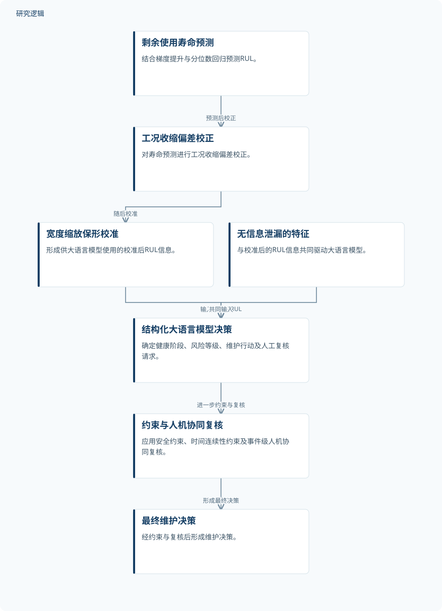

摘要解读
面向轴承预测性维护的可信大语言模型方法
A Trustworthy Large Language Model-Based Method for Bearing Predictive Maintenance
解读更新 2026-10-23 07:17 · 依据公开摘要整理，未核验全文细节
轴承预测维护不仅要判断还能运行多久，还要把寿命信息转化为可执行的维护决策。这项研究关注大语言模型低估风险、建议随时间波动的问题，将寿命预测、决策约束与人工复核连接起来，提供了一条理解可信智能运维的具体路径。
文章目录
维护建议的难点：风险判断与时间一致性
大语言模型能够整合多源信息，并生成结构化维护建议，但建议能否用于实际决策，不能只看表达是否完整。摘要指出，模型输出可能低估风险，也可能随时间波动，从而削弱决策的实际可执行性。
本文针对轴承预测维护，将关注点从单独预测剩余使用寿命，延伸到如何形成稳定、可靠且可追溯的维护决策。其核心问题是：寿命预测信息如何经过决策与审核环节，最终支持维护行动。
从寿命校准到受约束的维护决策
研究首先结合梯度提升与分位数回归，预测剩余使用寿命（RUL），随后进行工况收缩偏差校正和宽度缩放保形校准。摘要明确给出了这些处理环节，但没有展开其具体计算形式和参数设置。
校准后的RUL信息与无信息泄漏的特征共同输入大语言模型，由模型确定健康阶段、风险等级、维护行动及人工复核请求。之后，再通过安全约束、时间连续性约束和事件级人机协同复核，形成最终维护决策。
依据摘要整理的轴承维护决策过程


依据摘要整理的示意图，并非论文原图；仅呈现寿命预测、信息输入与维护决策之间明确陈述的关系。
下载 SVG图示关系说明
实线表示相邻阶段的信息流，虚线表示跨阶段联系或反馈。
剩余使用寿命预测 → 工况收缩偏差校正：预测后校正；工况收缩偏差校正 → 宽度缩放保形校准：随后校准；宽度缩放保形校准 → 结构化大语言模型决策：输入校准后RUL；无信息泄漏的特征 → 结构化大语言模型决策：共同输入；结构化大语言模型决策 → 约束与人机协同复核：进一步约束与复核；约束与人机协同复核 → 最终维护决策：形成最终决策
摘要报告的是集成体系，而非量化领先幅度
作者将所提出的方法概括为融合概率性RUL信息、结构化大语言模型决策、多层约束和人工复核的维护决策系统，并将其描述为稳定、可靠且可追溯的体系，连接了感知数据与维护决策。
摘要还报告了与传统逻辑回归、随机森林模型的比较，以及跨轴承泛化实验，分别用于界定大语言模型的性能边界和考察不同轴承间的适用性。不过，摘要没有给出比较指标、数值结果或优势方向，因此不能据此认定大语言模型优于这些传统模型。
适用范围与可靠性程度仍需更多证据
仅凭本次摘要，无法判断轴承样本数量、数据来源、工况覆盖、训练测试划分及跨轴承验证的具体范围，也无法核实无信息泄漏特征的构造方式。这些属于摘要未报告的信息，不意味着论文没有开展相关工作。
摘要同样未提供风险低估、时间波动或人工复核负担的量化结果，也未说明各层约束分别贡献了多少效果。因此，稳定性与可靠性的改善程度、比较是否充分，以及实际部署条件下的表现，仍不能由当前资料确定。
阅读启发：关注预测信息如何约束行动
阅读启发：本文值得关注的不只是大语言模型生成了什么建议，还包括校准后的寿命信息如何影响风险判断，以及安全约束、时间连续性约束和人工复核如何共同参与最终决策。
进一步阅读时，建议重点查看传统模型比较揭示了哪些性能边界、跨轴承实验覆盖哪些差异，以及系统如何保留决策追溯信息。这些问题直接关系到摘要所述可信维护体系的证据强度，而不是预先假定其已具备普遍部署能力。
以上为本站阅读启发与建议，不是论文已验证的结论。